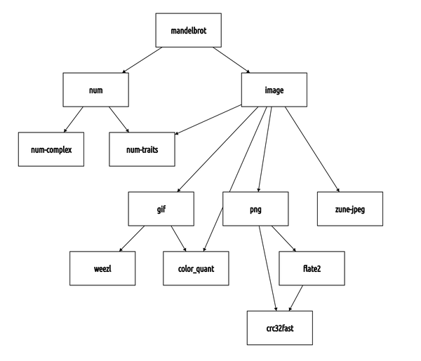
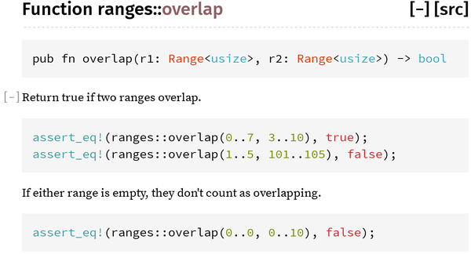

Chapter 8. Crates and Modules
This is one note in a Rust theme: systems programmers can have nice things.
Robert O’Callahan, “Random Thoughts on Rust: crates.io and IDEs”
Suppose you’re writing a program that simulates the growth of ferns, from the level of individual cells on up. Your program, like a fern, will start out very simple, with all the code, perhaps, in a single file—just the spore of an idea. As it grows, it will start to have internal structure. Different pieces will have different purposes. It will branch out into multiple files. It may cover a whole directory tree. In time it may become a significant part of a whole software ecosystem. For any program that grows beyond a few data structures or a few hundred lines, some organization is necessary.
This chapter covers the features of Rust that help keep your program organized: crates and modules. We’ll also cover other topics related to the structure and distribution of a Rust crate, including how to document and test Rust code, how to silence unwanted compiler warnings, how to use Cargo to manage project dependencies and versioning, how to publish open source libraries on Rust’s public crate repository, crates.io, how Rust evolves through language editions, and more, using the fern simulator as our running example.
Crates
Rust programs are made of crates. Each crate is a complete, cohesive unit: all the source code for a single library or executable, plus any associated tests, examples, tools, configuration, and other junk. For your fern simulator, you might use third-party libraries for 3D graphics, bioinformatics, parallel computation, and so on. These libraries are distributed as crates (see Figure 8-1).

Figure 8-1. A crate and its dependencies
The easiest way to see what crates are and how they work together is to use cargo build with the --verbose flag to build an existing project that has some dependencies. We did this using “A Concurrent Mandelbrot Program” as our example. The results are shown here:
$cdmandelbrot$cargoclean# delete previously compiled code$cargobuild--verboseUpdating registry `https://github.com/rust-lang/crates.io-index`Downloading autocfg v1.0.0Downloading semver-parser v0.7.0Downloading gif v0.9.0Downloading png v0.7.0... (downloading and compiling many more crates)Compiling png v0.17.14Running `.../rustc--crate-name png--edition=2018.../png-0.17.14/src/lib.rs...`...Compiling image v0.25.5Running `.../rustc--crate-name image--edition=2024.../image-0.25.5/src/lib.rs--extern png=/tmp/rustbook-test-files/mandelbrot/target/debug/deps/libpng-5661ec35ed9edb7d.rmeta...`Compiling mandelbrot v0.1.0 (/tmp/rustbook-test-files/mandelbrot)Running `.../rustc--crate-name mandelbrot--edition=2024src/main.rs...-L dependency=.../target/debug/deps--extern image=.../libimage-9e7904bb08b4f62d.rlib--extern num=.../libnum-f102695dfa84058c.rlib`Finished dev [unoptimized + debuginfo] target(s) in 16.94s$
We reformatted the rustc command lines for readability, and we deleted a lot of compiler options that aren’t relevant to our discussion, replacing them with an ellipsis (...).
You might recall that by the time we were done, the Mandelbrot program’s main.rs contained several use declarations for items from other crates:
usenum::Complex;// ...useimage::ColorType;useimage::png::PNGEncoder;
We also specified in our Cargo.toml file which version of each crate we wanted:
[dependencies]num="0.4.3"image="0.25.10"
The word dependencies here just means other crates this project uses: code we’re depending on. We found these crates on crates.io, the Rust community’s site for open source crates. For example, we found out about the image library by going to crates.io and searching for an image library. Each crate’s page on crates.io shows its README.md file and links to documentation and source, as well as a line of configuration like image = "0.25.10" that you can copy and add to your Cargo.toml. The version numbers shown here are simply the latest versions of these three packages at the time we wrote the program.
The Cargo transcript tells the story of how this information is used. When we run cargo build, Cargo starts by downloading source code for the specified versions of these crates from crates.io. Then, it reads those crates’ Cargo.toml files, downloads their dependencies, and so on recursively. For example, the source code for version 0.25.10 of the image crate contains a Cargo.toml file that includes dependencies on other crates, including gif, zune-jpeg, and png. Seeing this, Cargo knows that before it can use image, it must fetch these crates as well. Later we’ll see how to tell Cargo to fetch source code from a Git repository or the local filesystem rather than crates.io.
Since mandelbrot depends on these crates indirectly, through its use of the image crate, we call them transitive dependencies of mandelbrot. The collection of all these dependency relationships, which tells Cargo everything it needs to know about what crates to build and in what order, is known as the dependency graph of the crate. Cargo’s automatic handling of the dependency graph and transitive dependencies is a huge win in terms of programmer time and effort.
Once it has the source code, Cargo compiles all the crates. It runs rustc, the Rust compiler, once for each crate in the project’s dependency graph. When compiling libraries, Cargo uses the --crate-type lib option. This tells rustc not to look for a main() function but instead to produce an .rlib file containing compiled code that can be used to create binaries and other .rlib files.
When compiling a program, Cargo uses --crate-type bin, and the result is a binary executable for the target platform: mandelbrot.exe on Windows, for example.
With each rustc command, Cargo passes --extern options, giving the filename of each library the crate will use. That way, when rustc sees a line of code like use image::png::PNGEncoder, it can figure out that image is the name of another crate, and thanks to Cargo, it knows where to find that compiled crate on disk. The Rust compiler needs access to these .rlib files because they contain the compiled code of the library. Rust will statically link that code into the final executable. The .rlib also contains type information so Rust can check that the library features we’re using in our code actually exist in the crate and that we’re using them correctly. It also contains a copy of the crate’s public inline functions, generics, and macros, features that can’t be fully compiled to machine code until Rust sees how we use them.
cargo build supports all sorts of options, most of which are beyond the scope of this book, but we will mention one here: cargo build --release produces an optimized build. Release builds run faster, but they take longer to compile, they don’t check for integer overflow, they skip debug_assert!() assertions, and the stack traces they generate on panic are generally less reliable.
Editions
Rust has extremely strong compatibility guarantees. Any code that compiled on Rust 1.0 must compile just as well on Rust 1.99 or, if it’s ever released, Rust 1.9000.
But sometimes there are compelling proposals for extensions to the language that would cause older code to no longer compile. For example, in 2018, after much discussion, Rust settled on a syntax for asynchronous programming that would use two new keywords, async and await (see Chapter 20). This language change would break any existing code using async or await as a variable name.
To support this kind of change with full backward compatibility, Rust introduced editions. The most important thing to know about Rust editions is that they are not a big deal. An edition is simply a backward compatibility option in the Rust compiler. Each crate’s Cargo.toml file contains a line in the [package] section that tells Cargo which --edition flag to pass to rustc:
edition="2024"
For new code, it’s best to use the latest edition. cargo new creates new projects on the latest edition by default. This book uses the 2024 edition throughout.
The choice of which edition to use is truly low-stakes, though. Rust promises that the compiler will always accept all extant editions of the language, and programs can freely mix crates written in different editions. It’s even fine for a 2015 edition crate to depend on a 2024 edition crate. In other words, a crate’s edition only affects how its source code is construed; edition distinctions are gone by the time the code has been compiled. This means there’s no pressure to update old crates just to continue to participate in the modern Rust ecosystem. Similarly, there’s no pressure to keep your crate on an older edition to avoid inconveniencing its users. You only need to change editions when you want to use new language features in your own code.
Nor are old editions frozen in time. The new language and library features introduced in each release of Rust are generally available across all editions. Old editions only miss out on features that would break old code.
So far, new editions have been released about every three years. They are not announced with great fanfare and a raft of exciting new features. The focus is on the specific incompatible changes, which inevitably seem small or obscure. They are designed to be small. Small changes can unlock significant future language features:
- The aforementioned new keywords
asyncandawaitin Rust 2018 unlocked Rust’s asynchronous code features (released in December 2023). - Minor syntax changes affecting macros in Rust 2021 unlocked C string literals (February 2024).
- Changes to the lifetimes of some temporary values in Rust 2024 unlocked
if letchaining (June 2025). - The new keyword
genin Rust 2024 could unlock Python-style generators in a future version of Rust.
Editions have also been used to introduce minor new features, such as iterability for arrays in Rust 2021, and tighten up Rust’s safety story, as when Rust 2024 marked the set_env standard library function as unsafe. (It had been non-thread-safe all along.)
The Rust Edition Guide covers the changes introduced in each edition in detail and explains step by step how to upgrade a crate to a new edition.
Rust Versions
Most new Rust features don’t require breaking changes, and therefore aren’t recorded in editions. So it’s often useful to write down the specific versions of Rust that your code supports. Both Cargo and Rustup consume Rust version information, but they do so in different ways and to different ends, and many projects provide both.
Cargo checks the [package] section of your Cargo.toml for the minimum Rust version required to build your code:
rust-version="1.79.0"
You can only specify “regular” versions in the rust-version field; Cargo ignores modifiers like -nightly here.
This is for the benefit of downstream users of your crate. Cargo knows its own version number and the rust-version of all the crates it encounters. Armed with this information, cargo build can warn users about any incompatibilities, and commands like cargo add and cargo update won’t try to update crate dependencies to versions that require a newer compiler.
Rustup, on the other hand, can change the actual version of Rust being used. If you publish a crate that supports a specific minimum version of Rust, it’s a good idea to test your code with that version, even if you usually develop it using the latest compiler. Rustup makes it easy to do that on a one-off basis by checking your calls to cargo, rustc, and so forth for an argument starting with a plus sign that specifies a version. For instance, running cargo +1.79.0 test will build and run your tests with the 1.79.0 toolchain, while cargo +stable build will use the latest stable version.
If you want to specify a default version of Rust that Rustup should use for your project, you can use a rust-toolchain.toml file in any directory in your project:
[toolchain]channel="nightly-2026-06-01"components=["clippy"]
The channel can be a stable version like 1.95.0, a particular nightly build of Rust, or just a channel name like stable. Unlike rust-version, this information isn’t used in dependency resolution; instead, any cargo or rustc commands in this directory automatically select the specified toolchain. By default, Rustup even downloads a toolchain if it’s not already installed, so all developers on your project will automatically get Rust upgrades when they pull changes to toolchain.toml. (If this is a little too automatic for your taste, you can disable it with rustup set auto-install disable, then manage toolchains explicitly with rustup toolchain install.)
Build Profiles
There are several configuration settings you can put in your Cargo.toml file that affect the rustc command lines that cargo generates (Table 8-1).
| Command line | Cargo.toml section used |
|---|---|
cargo build |
[profile.dev] |
cargo build --release |
[profile.release] |
cargo test |
[profile.test] |
The defaults are usually fine, but one wrinkle is that release builds do not produce good stack traces by default. This matters when you’re debugging panic backtraces in release builds, or when you want to use a profiler—a tool that measures where your program is spending its CPU time. In these cases, you need both optimizations (usually enabled only in release builds) and debug symbols (usually enabled only in debug builds). To enable both, add this to your Cargo.toml:
[profile.release]debug="limited"# enable some debug symbols in release builds
The debug setting controls the -C debuginfo option to rustc. With this configuration, when you type cargo build --release, you’ll get a binary with all the debug symbols needed for good backtraces and profiling. The optimization settings are unaffected.
This is off by default because the debug symbols are large. This may quadruple the size of the executable.
The Cargo documentation lists many other settings you can adjust in Cargo.toml.
Modules
Whereas crates are about code sharing between projects, modules are about code organization within a project. They act as Rust’s namespaces, containers for the functions, types, constants, and so on that make up your Rust program or library. A module looks like this:
modspores{usecells::{Cell,Gene};/// A cell made by an adult fern. It disperses on the wind as part of/// the fern life cycle. A spore grows into a prothallus -- a whole/// separate organism, up to 5mm across -- which produces the zygote/// that grows into a new fern. (Plant sex is complicated.)pubstructSpore{...}/// Simulates the production of a spore by meiosis.pubfnproduce_spore(factory:&mutSporangium)->Spore{...}/// Extracts the genes in a particular spore.pub(crate)fngenes(spore:&Spore)->Vec<Gene>{...}/// Mixes genes to prepare for meiosis (part of interphase).fnrecombine(parent:&mutCell){...}...}
A module is a collection of items, named features like the Spore struct and the three functions in this example. The pub keyword makes an item public, so it can be accessed from outside the module.
One function is marked pub(crate), meaning that it is available anywhere inside this crate, but isn’t exposed as part of the external interface. It can’t be used by other crates, and it won’t show up in this crate’s documentation.
Anything that isn’t marked pub is private and can only be used in the same module in which it is defined, or any child modules:
lets=spores::produce_spore(&mutfactory);// okspores::recombine(&mutcell);// error: `recombine` is private
Marking an item as pub is often known as “exporting” that item.
The rest of this section covers the details you’ll need to know to make full use of modules:
-
We show how to nest modules and distribute them across different files and directories, if needed.
-
We explain the path syntax Rust uses to refer to items from other modules and show how to import items so that you can use them without having to write out their full paths.
-
We touch on Rust’s fine-grained control for struct fields.
-
We introduce prelude modules, which reduce boilerplate by gathering together common imports that almost any user will need.
-
We present constants and statics, two ways to define named values, for clarity and consistency.
Nested Modules
Modules can nest, and it’s fairly common to see a module that’s just a collection of submodules:
modplant_structures{pubmodroots{...}pubmodstems{...}pubmodleaves{...}}
If you want an item in a nested module to be visible to other crates, be sure to mark it and all enclosing modules as public. Otherwise you may see a warning like this:
warning: function `is_square` is never used|49 | pub fn is_square(root: &Root) -> bool {| ^^^^^^^^^
Perhaps this function really is dead code at the moment. But if you meant to use it in other crates, Rust is letting you know that it’s not actually visible to them. You should make sure its enclosing modules are all pub as well.
It’s also possible to specify pub(super), making an item visible to the parent module only, and pub(in <path>), which makes it visible in a specific parent module and its descendants. This is especially useful with deeply nested modules:
modplant_structures{pubmodroots{pubmodproducts{pub(incrate::plant_structures::roots)structCytokinin{...}}useproducts::Cytokinin;// ok: in `roots` module}useroots::products::Cytokinin;// error: `Cytokinin` is private}// error: `Cytokinin` is privateuseplant_structures::roots::products::Cytokinin;
In this way, we could write out a whole program, with a huge amount of code and a whole hierarchy of modules, related in whatever ways we wanted, all in a single source file.
Actually working that way is a pain, though, so there’s an alternative.
Modules in Separate Files
A module can also be written like this:
modspores;
Earlier, we included the body of the spores module, wrapped in curly braces. Here, we’re instead telling the Rust compiler that the spores module lives in a separate file, called spores.rs:
// spores.rs/// A cell made by an adult fern...pubstructSpore{...}/// Simulates the production of a spore by meiosis.pubfnproduce_spore(factory:&mutSporangium)->Spore{...}/// Extracts the genes in a particular spore.pub(crate)fngenes(spore:&Spore)->Vec<Gene>{...}/// Mixes genes to prepare for meiosis (part of interphase).fnrecombine(parent:&mutCell){...}
spores.rs contains only the items that make up the module. It doesn’t need any kind of boilerplate to declare that it’s a module.
The location of the code is the only difference between this spores module and the version we showed in the previous section. The rules about what’s public and what’s private are exactly the same either way. And Rust never compiles modules separately, even if they’re in separate files: when you build a Rust crate, you’re recompiling all of its modules.
A module can have its own directory. When Rust sees mod spores;, it checks for both spores.rs and spores/mod.rs; if neither file exists, or both exist, that’s an error. For this example, we used spores.rs, because the spores module did not have any submodules. But consider the plant_structures module we wrote out earlier. If we decide to split that module and its three submodules into their own files, the resulting project would look like this:
fern-sim/├── Cargo.toml└── src/├── main.rs├── spores.rs└── plant_structures/├── mod.rs├── leaves.rs├── roots.rs└── stems.rs
In main.rs, we declare the plant_structures module:
pubmodplant_structures;
This causes Rust to load plant_structures/mod.rs, which declares the three submodules:
// in plant_structures/mod.rspubmodroots;pubmodstems;pubmodleaves;
The content of those three modules is stored in separate files named leaves.rs, roots.rs, and stems.rs, located alongside mod.rs in the plant_structures directory.
It’s also possible to use a file and directory with the same name to make up a module. For instance, if stems needed to include modules called xylem and phloem, we could choose to keep stems in plant_structures/stems.rs and add a stems directory:
fern-sim/├── Cargo.toml└── src/├── main.rs├── spores.rs└── plant_structures/├── mod.rs├── leaves.rs├── roots.rs├── stems/│ ├── phloem.rs│ └── xylem.rs└── stems.rs
Then, in stems.rs, we declare the two new submodules:
// in plant_structures/stems.rspubmodxylem;pubmodphloem;
These three options—modules in their own file, modules in their own directory with a mod.rs, and modules in their own file with a supplementary directory containing submodules—give the module system enough flexibility to support almost any project structure you might desire.
Paths and Imports
The :: operator is used to access features of a module. Code anywhere in your project can refer to any standard library feature by writing out its path:
ifs1>s2{std::mem::swap(&muts1,&muts2);}
std is the name of the standard library. The path std refers to the top-level module of the standard library. std::mem is a submodule within the standard library, and std::mem::swap is a public function in that module.
You could write all your code this way, spelling out std::f64::consts::PI and std::collections::HashMap::new every time you want a circle or a dictionary, but it would be tedious to type and hard to read. The alternative is to import features into the modules where they’re used:
usestd::mem;ifs1>s2{mem::swap(&muts1,&muts2);}
The use declaration causes the name mem to be a local alias for std::mem throughout the enclosing block or module.
We could write use std::mem::swap; to import the swap function itself instead of the mem module. However, what we did earlier is generally considered the best style: import types, traits, and modules (like std::mem) and then use relative paths to access the functions, constants, and other members within.
Several names can be imported at once:
usestd::collections::{HashMap,HashSet};// import bothusestd::fs::{self,File};// import both `std::fs` and `std::fs::File`.usestd::io::prelude::*;// import everything
This is just shorthand for writing out all the individual imports:
usestd::collections::HashMap;usestd::collections::HashSet;usestd::fs;usestd::fs::File;// all the public items in std::io::prelude:usestd::io::prelude::Read;usestd::io::prelude::Write;usestd::io::prelude::BufRead;usestd::io::prelude::Seek;
You can use as to import an item but give it a different name locally:
usestd::io::ResultasIOResult;// This return type is just another way to write `std::io::Result<()>`:fnsave_spore(spore:&Spore)->IOResult<()>...
Modules do not automatically inherit names from their parent modules. For example, suppose we have this in our proteins/mod.rs:
// proteins/mod.rspubenumAminoAcid{...}pubmodsynthesis;
Then the code in synthesis.rs does not automatically see the type AminoAcid:
// proteins/synthesis.rspubfnsynthesize(seq:&[AminoAcid])// error: can't find type `AminoAcid`...
Instead, each module starts with a blank slate and must import the names it uses:
// proteins/synthesis.rsusesuper::AminoAcid;// explicitly import from parentpubfnsynthesize(seq:&[AminoAcid])// ok...
By default, paths are relative to the current module:
// in proteins/mod.rs// import from a submoduleusesynthesis::synthesize;
self is also a synonym for the current module, so we could write either:
// in proteins/mod.rs// import names from an enum,// so we can write `Lys` for lysine, rather than `AminoAcid::Lys`useself::AminoAcid::*;
or simply:
// in proteins/mod.rsuseAminoAcid::*;
(The AminoAcid example here is, of course, a departure from the style rule we mentioned earlier about only importing types, traits, and modules. If our program includes long amino acid sequences, this is justified under Orwell’s Sixth Rule: “Break any of these rules sooner than say anything outright barbarous.”)
The keywords super and crate have a special meaning in paths: super refers to the parent module, and crate refers to the crate containing the current module.
Using paths relative to the crate root rather than the current module makes it easier to move code around the project, since all the imports won’t break if the path of the current module changes. For example, we could write synthesis.rs using crate:
// proteins/synthesis.rsusecrate::proteins::AminoAcid;// explicitly import relative to crate rootpubfnsynthesize(seq:&[AminoAcid])// ok...
Submodules can access private items in their parent modules with use super::*.
If you have a module with the same name as a crate that you are using, then referring to their contents takes some care. For example, if your program lists the image crate as a dependency in its Cargo.toml file, but also has a module named image, then paths starting with image are ambiguous:
modimage{pubstructSampler{...}}// error: Does this refer to our `image` module, or the `image` crate?useimage::Pixels;
Even though the image module has no Pixels type, the ambiguity is still considered an error: it would be confusing if adding such a definition later could silently change what paths elsewhere in the program refer to.
To resolve the ambiguity, Rust has a special kind of path called an absolute path, starting with ::, which always refers to an external crate. To refer to the Pixels type in the image crate, you can write:
use::image::Pixels;// the `image` crate's `Pixels`
To refer to your own module’s Sampler type, you can write:
useself::image::Sampler;// the `image` module's `Sampler`
Modules aren’t the same thing as files, but there is a natural analogy between modules and the files and directories of a Unix filesystem. The use keyword creates aliases, just as the ln command creates links. Paths, like filenames, come in absolute and relative forms. self and super are like the . and .. special directories.
The Standard Prelude
We said a moment ago that each module starts with a “blank slate,” as far as imported names are concerned. But the slate is not completely blank. For one thing, the standard library std is linked with every project by default, so std is automatically in scope. Without importing anything, you can use standard library features by their full path, like std::mem::swap.
Furthermore, a few particularly handy names, like Vec and Result, are included in the standard prelude and automatically imported. The 2024 edition of Rust behaves as though every module, including the root module, started with the following import:
usestd::prelude::rust_2024::*;
The standard prelude contains a few dozen commonly used traits, types, functions, and macros. You can see the full list by looking up std::prelude in the standard library documentation.
Older editions of the language use slightly different standard preludes. For example, the Future trait used in asynchronous programming was added to the prelude in Rust 2024.
Libraries sometimes provide a module named prelude, as a convention to tell users the module is meant to be imported using *. But the standard prelude is the only one that is ever imported automatically.
Making use Declarations pub
Even though use declarations are just aliases, they can be public:
// in plant_structures/mod.rs...pubuseself::leaves::Leaf;pubuseself::roots::Root;
This means that Leaf and Root are public items of the plant_structures module. They are still simple aliases for plant_structures::leaves::Leaf and plant_structures::roots::Root.
The standard prelude is written as just such a series of pub imports.
Making Struct Fields pub
A module can include user-defined struct types, introduced using the struct keyword. We cover these in detail in Chapter 9, but this is a good point to mention how modules interact with the visibility of struct fields.
A simple struct looks like this:
pubstructFern{pubroots:RootSet,pubstems:StemSet,}
A struct’s fields, even private fields, are accessible throughout the module where the struct is declared, and its submodules. Outside the module, only public fields are accessible.
It turns out that enforcing access control by module, rather than by class as in Java or C++, is surprisingly helpful for software design. It cuts down on boilerplate “getter” and “setter” methods, and it largely eliminates the need for anything like C++ friend declarations. A single module can define several types that work closely together, such as perhaps frond::LeafMap and frond::LeafMapIter, accessing each other’s private fields as needed, while still hiding those implementation details from the rest of your program.
Constants and Statics
In addition to functions, types, and nested modules, modules can also define constants and statics.
The const keyword introduces a constant. The syntax is just like let except that it may be marked pub, and the type is required. Also, UPPERCASE_NAMES are conventional for constants:
pubconstROOM_TEMPERATURE:f64=20.0;// degrees Celsius
The static keyword introduces a global variable, which is not quite the same thing:
pubstaticROOM_TEMPERATURE:f64=68.0;// degrees Fahrenheit
A constant is a bit like a C++ #define: the value is compiled into your code every place it’s used. A static is a variable that’s set up before your program starts running, has a single location in memory, and lasts until it exits. Use constants for magic numbers and strings in your code. Use statics for larger amounts of data, or any time you need to borrow a reference to the constant value.
There are no mut constants. Statics can be marked mut, but as discussed in Chapter 5, Rust has no way to enforce its rules about exclusive access on mut statics. They are, therefore, inherently non-thread-safe, and safe code can’t use them at all:
staticmutPACKETS_SERVED:usize=0;println!("{PACKETS_SERVED} served");// error: use of mutable static
Rust discourages global mutable state. For a discussion of the alternatives, see “Global Variables”.
Turning a Program into a Library
As your fern simulator starts to take off, you decide you need more than a single program. Suppose you’ve got one command-line program that runs the simulation and saves results in a file. Now, you want to write other programs for performing scientific analysis of the saved results, displaying 3D renderings of the growing plants in real time, rendering photorealistic pictures, and so on. All these programs need to share the basic fern simulation code. You need to make a library.
The first step is to factor your existing project into two parts: a library crate, which contains all the shared code, and an executable, which contains the code that’s only needed for your existing command-line program.
To show how you can do this, let’s use a grossly simplified example program:
structFern{size:f64,growth_rate:f64,}implFern{/// Simulates a fern growing for one day.fngrow(&mutself){self.size*=1.0+self.growth_rate;}}/// Runs a fern simulation for some number of days.fnrun_simulation(fern:&mutFern,days:usize){for_in0..days{fern.grow();}}fnmain(){letmutfern=Fern{size:1.0,growth_rate:0.001,};run_simulation(&mutfern,1000);println!("final fern size: {}",fern.size);}
We’ll assume that this program has a trivial Cargo.toml file:
[package]name="fern-sim"version="0.1.0"authors=["You <you@example.com>"]edition="2024"
Turning this program into a library is easy. Here are the steps:
-
Rename the file src/main.rs to src/lib.rs.
-
Add the
pubkeyword to items in src/lib.rs that will be public features of our library. -
Move the
mainfunction to a temporary file somewhere. We’ll come back to it in a minute.
The resulting src/lib.rs file looks like this:
pubstructFern{pubsize:f64,pubgrowth_rate:f64,}implFern{/// Simulates a fern growing for one day.pubfngrow(&mutself){self.size*=1.0+self.growth_rate;}}/// Runs a fern simulation for some number of days.pubfnrun_simulation(fern:&mutFern,days:usize){for_in0..days{fern.grow();}}
Note that we didn’t need to change anything in Cargo.toml. This is because our minimal Cargo.toml file leaves Cargo to its default behavior. By default, cargo build looks at the files in our source directory and figures out what to build. When it sees the file src/lib.rs, it knows to build a library.
The code in src/lib.rs forms the root module of the library. Other crates that use our library can only access the public items of this root module.
The src/bin Directory
Getting the original command-line fern-sim program working again is also straightforward: Cargo has some built-in support for small programs that live in the same crate as a library.
In fact, Cargo itself is written this way. The bulk of the code is in a Rust library. The cargo command-line program that we’ve been using throughout this book is a thin wrapper program that calls out to the library for all the heavy lifting. Both the library and the command-line program live in the same source repository.
We can keep our program and our library in the same crate, too. Put this code into a file named src/bin/efern.rs:
usefern_sim::Fern;fnmain(){letmutfern=Fern{size:1.0,growth_rate:0.001,};fern_sim::run_simulation(&mutfern,1000);println!("final fern size: {}",fern.size);}
The main function is the one we set aside earlier. We’ve added a use declaration to import the Fern type from the fern-sim crate, and further down we call fern_sim::run_simulation. In other words, we’re using that crate as a library.
Because we’ve put this file into src/bin, Cargo will compile both the fern-sim library and this program the next time we run cargo build. We can run the efern program using cargo run --bin efern. Here’s what it looks like, using --verbose to show the commands Cargo is running:
$cargobuild--verboseCompiling fern-sim v0.1.0 (/.../fern-sim)Running `rustc --crate-name fern-sim ... src/lib.rs ...`Running `rustc --crate-name efern ... src/bin/efern.rs ...`$cargorun--verbose--binefernFresh fern-sim v0.1.0 (/.../fern-sim)Running `target/debug/efern`final fern size: 2.7169239322355985
We still didn’t have to make any changes to Cargo.toml, because, again, Cargo’s default is to look at your source files and figure things out. It automatically treats .rs files in src/bin as extra programs to build.
We can also build larger programs in the src/bin directory using subdirectories. Suppose we want to provide a second program that draws a fern on the screen, but the drawing code is large and modular, so it belongs in its own file. We can give the second program its own subdirectory:
fern-sim/├── Cargo.toml└── src/└── bin/├── efern.rs└── draw-fern/├── main.rs└── draw.rs
This has the advantage of letting larger binaries have their own submodules without cluttering up either the library code or the src/bin directory.
Of course, now that fern-sim is a library, we also have another option. We could have put this program in its own isolated project, in a completely separate directory, with its own Cargo.toml listing fern-sim as a dependency:
[dependencies]fern-sim={path="../fern-sim"}
Perhaps that is what you’ll do for other fern-simulating programs down the road. The src/bin directory is just right for simple programs like efern and draw-fern.
Attributes
Any item in a Rust program can be decorated with attributes. Attributes are Rust’s catchall syntax for writing miscellaneous instructions and advice to the compiler. For example, suppose you’re getting this warning:
warning: type `git_revspec` should have an upper camel case name|83 | pub struct git_revspec {| ^^^^^^^^^^^ help: convert the identifier to| upper camel case: `GitRevspec`|= note: `#[warn(non_camel_case_types)]` on by default
But you chose this name for a reason, and you wish Rust would shut up about it. You can disable the warning by adding an #[allow] attribute on the type:
#[allow(non_camel_case_types)]pubstructgit_revspec{...}
Other warning-related attributes include #[deny], to treat specified warnings as errors, and #[expect], which is like #[allow] except that it’s an error if an expected warning isn’t triggered. The point is to remind you to remove the attribute later, if it’s no longer needed.
Another typical example of an attribute is #[inline], which is used to micromanage the inline expansion of functions:
/// Adjusts levels of ions etc. in two adjacent cells/// due to osmosis between them.#[inline]fndo_osmosis(c1:&mutCell,c2:&mutCell){...}
Inlining is an optimization that we’re usually happy to leave to the compiler, but there’s one situation where inlining won’t happen without #[inline]. When a function defined in one crate is called in another crate, Rust won’t inline it unless it’s generic (it has type parameters) or it’s explicitly marked #[inline].
Otherwise, the compiler treats #[inline] as a suggestion. Rust also supports the more insistent #[inline(always)], to request that a function be expanded inline at every call site, and #[inline(never)], to ask that a function never be inlined.
Some attributes, like #[allow], can be attached to a whole module and apply to everything in it. Others, like #[test] and #[inline], must be attached to individual items. As you might expect for a catchall feature, each attribute is custom-made and has its own set of supported arguments. The Rust Reference documents the full set of supported attributes in detail.
To attach an attribute to a whole crate, add it at the top of the main.rs or lib.rs file, before any items, and write #! instead of #, like this:
// libgit2_sys/lib.rs#![allow(non_camel_case_types)]pubstructgit_revspec{...}pubstructgit_error{...}
The #! tells Rust to attach an attribute to the enclosing item rather than whatever comes next: in this case, the #![allow] attribute attaches to the whole libgit2_sys crate, not just struct git_revspec.
#! can also be used inside functions, structs, and so on, but it’s only typically used at the beginning of a file, to attach an attribute to the whole module or crate. Some attributes always use the #! syntax because they can only be applied to a whole crate.
For example, the #![feature] attribute is used to turn on unstable features of the Rust language and libraries, features that are experimental, and therefore might have bugs or might be changed or removed in the future. For instance, as we’re writing this, Rust has experimental support for f16, a floating point type whose finite range is ±65,504:
#![feature(f16)]fnmain(){println!("{}",std::f16::consts::PI);// 3.14}
Experimental features are available only in nightly builds of Rust, not in the official stable releases. Over time, the Rust team sometimes stabilizes an experimental feature so that it becomes a standard part of the language. The #![feature] attribute then becomes superfluous, and Rust generates a warning advising you to remove it.
Conditional Compilation
The #[cfg] attribute is used to mark code that should be conditionally compiled. It can be used on any declaration, even a module:
// Only include this module in the project if we're building for Android.#[cfg(target_os ="android")]modmobile;
The full syntax of #[cfg] is specified in the Rust Reference. Table 8-2 lists the most commonly used options.
#[cfg(...)] option |
Enabled when |
|---|---|
test |
Tests are enabled (compiling with cargo test or rustc --test). |
debug_assertions |
Debug assertions are enabled (typically in nonoptimized builds). |
unix |
Compiling for Unix, including macOS. |
windows |
Compiling for Windows. |
target_pointer_width = "64" |
Targeting a 64-bit platform. The other possible value is "32". |
target_arch = "x86_64" |
Targeting x86-64 in particular. Other values: "x86", "arm", "aarch64", "powerpc", "powerpc64", "mips". |
target_os = "macos" |
Compiling for macOS. Other values: "windows", "ios", "android", "linux", "freebsd", "openbsd", "netbsd", "dragonfly". |
feature = "robots" |
The user-defined feature named "robots" is enabled (compiling with cargo build --feature robots or rustc --cfg feature='"robots"'). Features are declared in the [features] section of Cargo.toml. |
not(A) |
A is not satisfied. To provide two different implementations of a function, mark one with #[cfg(X)] and the other with #[cfg(not(X))]. |
all(A,B) |
Both A and B are satisfied (the equivalent of &&). |
any(A,B) |
Either A or B is satisfied (the equivalent of ||). |
false |
Never. This can be used to comment out an item. |
The #[cfg] attribute can be used on functions, types, imports, and even individual blocks of code.
Rust also supports a built-in macro, cfg!(...), that returns true if the current build configuration matches the condition in parentheses, and false otherwise. The macro supports the same syntax as the #[cfg(...)] attribute. For example, cfg!(debug_assertions) is true if you’re compiling with debug assertions enabled.
The Build Environment
The env!("VAR_NAME") macro offers another way for a Rust crate to adapt to build configuration. It returns a string: the value of the specified environment variable at compile time. If the variable doesn’t exist, it’s a compilation error.
Cargo sets several interesting environment variables when it compiles a crate. For example, to get your crate’s current version string, you can write:
constMY_VERSION:&str=env!("CARGO_PKG_VERSION");
A full list of these environment variables is included in the Cargo documentation.
The option_env!("VAR_NAME") macro is the same as env! except that it returns an Option<&str> that is None if the specified variable is not set.
Including Files
Three more built-in macros let you bring in code or data from another file:
include!("file.rs")-
Expands to the contents of the specified file, which must be valid Rust code—either an expression or a sequence of items.
include_str!("file.txt")-
Expands to a
&'static strcontaining the text of the specified file. You can use it like this:constCOMPOSITOR_SHADER:&str=include_str!("../resources/compositor.glsl");If the file doesn’t exist or is not valid UTF-8, you’ll get a compilation error.
include_bytes!("file.dat")-
This is the same except the file is treated as binary data, not UTF-8 text. The result is a
&'static [u8].
Like all macros, these are processed at compile time. If the file doesn’t exist or can’t be read, compilation fails. They can’t fail at run time. In all cases, if the filename is a relative path, it’s resolved relative to the directory that contains the current file.
Tests and Documentation
As we saw in “Writing and Running Unit Tests”, a simple unit testing framework is built into Rust. Tests are ordinary functions marked with the #[test] attribute:
#[test]fnmath_works(){letx:i32=1;assert!(x.is_positive());assert_eq!(x+1,2);}
cargo test runs all the tests in your project:
$cargotestCompiling math_test v0.1.0 (/home/jimb/rust/math_test)Finished `test` profile [unoptimized + debuginfo] target(s) in 0.49sRunning unittests src/lib.rs (target/debug/deps/math_test-dfc7...)running 1 testtest math_works ... oktest result: ok. 1 passed; 0 failed; 0 ignored; 0 measured; 0 filtered out;finished in 0.00s
(You’ll also see some output about “doc-tests,” which we’ll get to in a minute.)
This works the same whether your crate is an executable or a library. You can run specific tests by passing arguments to Cargo: cargo test math runs all tests that contain math somewhere in their name.
Tests commonly use the assert! and assert_eq! macros from the Rust standard library. assert!(expr) succeeds if expr is true. Otherwise, it panics, which causes the test to fail. assert_eq!(v1, v2) is just like assert!(v1 == v2) except that if the assertion fails, the error message shows both values.
You can use these macros in ordinary code, to check invariants, but note that assert! and assert_eq! are included even in release builds. Use debug_assert! and debug_assert_eq! instead to write assertions that are checked only in debug builds.
To test error cases, add the #[should_panic] attribute to your test:
/// This test passes only if division by zero causes a panic,/// as we claimed in the previous chapter.#[test]#[allow(unconditional_panic, unused_must_use)]#[should_panic(expected ="divide by zero")]fntest_divide_by_zero_error(){1/0;// should panic!}
In this case, we also need to add an allow attribute to tell the compiler to let us do things that it can statically prove will panic, and perform divisions and just throw away the answer, because normally, it tries to stop that kind of silliness.
You can also return a Result<(), E> from your tests. As long as the error variant is Debug, which is usually the case, you can simply return a Result by using ? to throw away the Ok variant:
usestd::num::ParseIntError;/// This test will pass if "1024" is a valid number, which it is.#[test]fnexplicit_radix()->Result<(),ParseIntError>{i32::from_str_radix("1024",10)?;Ok(())}
Functions marked with #[test] are compiled conditionally. A plain cargo build or cargo build --release skips the testing code. But when you run cargo test, Cargo builds your program twice: once in the ordinary way and once with your tests and the test harness enabled. This means your unit tests can live right alongside the code they test, accessing internal implementation details if they need to, and yet there’s no run-time cost. However, it can result in some warnings. For example:
fnroughly_equal(a:f64,b:f64)->bool{(a-b).abs()<1e-6}#[test]fntest_circle_area(){letcircle=Circle::new(1.0);assert!(roughly_equal(circle.area(),std::f64::consts::PI));}
In builds that omit the test code, roughly_equal appears unused, and Rust will complain:
$cargobuildCompiling math_test v0.1.0 (file:///.../math_test)warning: function `roughly_equal` is never used|7 | fn roughly_equal(a: f64, b: f64) -> bool {| ^^^^^^^^^^^^^|= note: `#[warn(dead_code)]` (part of `#[warn(unused)]`) on by default
So the convention, when your tests get substantial enough to require support code, is to put them in a tests module and declare the whole module to be testing-only using the #[cfg] attribute:
#[cfg(test)]// include this module only when testingmodtests{usesuper::*;// import everything from the enclosing modulefnroughly_equal(a:f64,b:f64)->bool{(a-b).abs()<1e-6}#[test]fncircle_area(){letcircle=Circle::new(1.0);assert!(roughly_equal(circle.area(),std::f64::consts::PI));}}
Cargo does not natively provide support for the automatic or random generation of tests, but several community projects do so very effectively.
-
The
rstestcrate provides a simple way to test the same code with many different inputs, automatically generating individual tests with each combination of the provided values. -
The
proptestcrate supports property-based testing, automatically generating and minimizing test cases based on more general properties, like “any number between 0 and 100” or “any validString“. -
The Rust Fuzzing Book covers the use of
cargo-fuzzandafl.rsfor fuzzing, the practice of testing the security and stability guarantees of software by generating random inputs and seeing if something breaks.
Rust’s test harness uses multiple threads to run several tests at a time, a nice side benefit of your Rust code being thread-safe by default. To disable this, either run a single test, cargo test testname, or run cargo test -- --test-threads 1. (The first -- ensures that cargo test passes the --test-threads option through to the test executable.) This means that, technically, the Mandelbrot program we showed in Chapter 2 was not the second multithreaded program in that chapter, but the third! The cargo test run in “Writing and Running Unit Tests” was the first.
Normally, the test harness only shows the output of tests that failed. To show the output from tests that pass too, run cargo test -- --nocapture.
Integration Tests
Your fern simulator continues to grow. You’ve decided to put all the major functionality into a library that can be used by multiple executables. It would be nice to have some tests that link with the library the way an end user would, using fern_sim.rlib as an external crate. Also, you have some tests that start by loading a saved simulation from a binary file, and it is awkward having those large test files in your src directory. Integration tests help with these two problems.
Integration tests are .rs files that live in a tests directory alongside your project’s src directory. When you run cargo test, Cargo compiles each integration test as a separate, standalone crate, linked with your library and the Rust test harness. Here is an example:
// tests/unfurl.rs - Fiddleheads unfurl in sunlightusefern_sim::Terrarium;usestd::time::Duration;#[test]fntest_fiddlehead_unfurling(){letmutworld=Terrarium::load("tests/unfurl_files/fiddlehead.tm");assert!(world.fern(0).is_furled());letone_hour=Duration::from_secs(60*60);world.apply_sunlight(one_hour);assert!(world.fern(0).is_fully_unfurled());}
Integration tests are valuable in part because they see your crate from the outside, just as a user would. They test the crate’s public API.
cargo test runs both unit tests and integration tests. To run only the integration tests in a particular file—for example, tests/unfurl.rs—use the command cargo test --test unfurl.
Documentation
The command cargo doc creates HTML documentation for your library:
$cargodoc--no-deps--openDocumenting fern-sim v0.1.0 (file:///.../fern-sim)
The --no-deps option tells Cargo to generate documentation only for fern-sim itself, and not for all the crates it depends on.
The --open option tells Cargo to open the documentation in your browser afterward.
You can see the result in Figure 8-2. Cargo saves the new documentation files in target/doc. The starting page is target/doc/fern_sim/index.html.

Figure 8-2. Example of documentation generated by rustdoc
The documentation is generated from the pub features of your library, plus any doc comments you’ve attached to them. We’ve seen a few doc comments in this chapter already. They look like comments:
/// Simulates the production of a spore by meiosis.pubfnproduce_spore(factory:&mutSporangium)->Spore{...}
But when Rust sees comments that start with three slashes, it treats them as a #[doc] attribute instead. Rust treats the preceding example exactly the same as this:
#[doc ="Simulates the production of a spore by meiosis."]pubfnproduce_spore(factory:&mutSporangium)->Spore{...}
When you compile a library or binary, these attributes don’t change anything, but when you generate documentation, doc comments on public features are included in the output.
Likewise, comments starting with //! are treated as #![doc] attributes and are attached to the enclosing feature, typically a module or crate. For example, your fern_sim/src/lib.rs file might begin like this:
//! Simulates the growth of ferns, from the level of//! individual cells on up.
The content of a doc comment is treated as Markdown, an easy-to-learn shorthand notation for HTML. The rest of this chapter assumes some familiarity with Markdown. Good tutorials are available on the web.
One special feature of doc comments in Rust is that Markdown links can use Rust item paths, like leaves::Leaf, instead of URLs, to indicate what they refer to. Cargo will substitute a link to the right place in the right documentation page. For example, the documentation generated from this code links to the documentation pages for VascularPath, Leaf, and Root:
/// Creates a [`VascularPath`] which represents the path of nutrients/// from the given [`Root`][r] to the given [`Leaf`](leaves::Leaf).////// [r]: roots::Rootpubfntrace_path(leaf:&leaves::Leaf,root:&roots::Root)->VascularPath{...}
You can use `backticks` to set off bits of code in the middle of running text. In the output, these snippets will be formatted in a fixed-width font. Larger code samples can be added by indenting four spaces:
/// A block of code in a doc comment:////// if samples::everything().works() {/// println!("ok");/// }
You can also use Markdown fenced code blocks. This has the same effect as indentation:
/// Another snippet, the same code, but written differently:////// ```/// if samples::everything().works() {/// println!("ok");/// }/// ```
Whichever format you use, an interesting thing happens when you include a block of code in a doc comment. Rust automatically turns it into a test.
Doc-Tests
When you run tests in a Rust library crate, Rust checks that all the code that appears in your documentation actually runs and works. It does this by taking each block of code that appears in a doc comment, compiling it as a separate executable crate, linking it with your library, and running it.
Here is a standalone example of a doc-test. Create a new project by running cargo new --lib ranges (the --lib flag tells Cargo we’re creating a library crate, not an executable crate) and put the following code in ranges/src/lib.rs:
usestd::ops::Range;/// Returns true if two ranges overlap.////// assert_eq!(ranges::overlap(0..7, 3..10), true);/// assert_eq!(ranges::overlap(1..5, 101..105), false);////// If either range is empty, they don't count as overlapping.////// assert_eq!(ranges::overlap(0..0, 0..10), false);///pubfnoverlap(r1:Range<usize>,r2:Range<usize>)->bool{r1.start<r1.end&&r2.start<r2.end&&r1.start<r2.end&&r2.start<r1.end}
The two small blocks of code in the doc comment appear in the documentation generated by cargo doc, as shown in Figure 8-3.

Figure 8-3. Documentation showing some doc-tests
They also become two separate tests:
$cargotestCompiling ranges v0.1.0 (/home/jimb/rust/ranges)...Doc-tests rangesrunning 2 teststest src/lib.rs - overlap (line 5) ... oktest src/lib.rs - overlap (line 10) ... oktest result: ok. 2 passed; 0 failed; 0 ignored; 0 measured; 0 filtered out;finished in 0.29s
If you pass the --verbose flag to Cargo, you’ll see that it’s using rustdoc --test to run these two tests. rustdoc stores each code sample in a separate file, adding a few lines of boilerplate code, to produce two programs. Here’s the first:
useranges;fnmain(){assert_eq!(ranges::overlap(0..7,3..10),true);assert_eq!(ranges::overlap(1..5,101..105),false);}
And here’s the second:
useranges;fnmain(){assert_eq!(ranges::overlap(0..0,0..10),false);}
The tests pass if these programs compile and run successfully.
These two code samples contain assertions, but that’s just because in this case, the assertions make decent documentation. The idea behind doc-tests is not to put all your tests into comments. Rather, you write the best possible documentation, and Rust makes sure the code samples in your documentation actually compile and run.
Very often a minimal working example includes some details, such as imports or setup code, that are necessary to make the code compile, but just aren’t important enough to show in the documentation. To hide a line of a code sample, put a # followed by a space at the beginning of that line:
Sometimes it’s helpful to show a complete sample program in documentation, including a main function. Obviously, if those pieces of code appear in your code sample, you do not also want rustdoc to add them automatically. The result wouldn’t compile. rustdoc therefore treats any code block containing the exact string fn main as a complete program and doesn’t add anything to it.
Testing can be disabled for specific blocks of code. To tell Rust to compile your example, but stop short of actually running it, use a fenced code block with the no_run annotation:
/// Uploads all local terrariums to the online gallery.////// ```no_run/// let mut session = fern_sim::connect();/// session.upload_all();/// ```pubfnupload_all(&mutself){...}
If the code block isn’t Rust code at all, use the name of the language, like c++ or sh, or text for plain text (or Rust pseudocode that isn’t expected to compile). rustdoc doesn’t know the names of hundreds of programming languages; rather, it treats any annotation it doesn’t recognize as indicating that the code block isn’t Rust. This disables code highlighting as well as doc-testing.
Specifying Dependencies
We’ve seen one way of telling Cargo where to get source code for crates your project depends on: by version number.
image="0.25.10"
There are several ways to specify dependencies, and some rather nuanced things you might want to say about which versions to use, so it’s worth spending a few pages on this.
First of all, you may want to use dependencies that aren’t published on crates.io at all. One way to do this is by specifying a Git repository URL and revision:
image={git="https://github.com/image-rs/image.git",rev="c708281"}
This particular crate is open source, hosted on GitHub, but you could just as easily point to a private Git repository hosted on your corporate network. As shown here, you can specify the particular rev, tag, or branch to use. (These are all ways of telling Git which revision of the source code to check out.)
Another alternative is to specify a directory that contains the crate’s source code:
image={path="vendor/image"}
This is convenient when your team has a single version control repository that contains source code for several crates, or perhaps the entire dependency graph. Each crate can specify its dependencies using relative paths.
Having this level of control over your dependencies is powerful. If you ever decide that any of the open source crates you use isn’t exactly to your liking, you can trivially fork it: just hit the Fork button on GitHub and change one line in your Cargo.toml file. Your next cargo build will seamlessly use your fork of the crate instead of the official version.
Versions
When you write something like image = "0.25" in your Cargo.toml file, Cargo interprets this rather loosely. It uses the most recent version of image that is considered compatible with version 0.25.
The compatibility rules are adapted from Semantic Versioning.
-
A version number that starts with 0.0 is so raw that Cargo never assumes it’s compatible with any other version.
-
A version number that starts with 0.x, where x is nonzero, is considered compatible with other point releases in the 0.x series. We specified
imageversion 0.25, but Cargo would use 0.25.5 if available. (This is not what the Semantic Versioning standard says about 0.x version numbers, but the rule proved too useful to leave out.) -
Once a project reaches 1.0, only new major versions break compatibility. So if you ask for version 2.0.1, Cargo might use 2.17.99 instead, but not 3.0.
Version numbers are flexible by default because otherwise the problem of which version to use would quickly become overconstrained. Suppose one library, libA, used num = "0.4.2" while another, libB, used num = "0.4.3". If version numbers required exact matches, no project would be able to use those two libraries together. Allowing Cargo to use any compatible version is a much more practical default.
Still, different projects have different needs when it comes to dependencies and versioning. You can specify an exact version or range of versions by using operators, as illustrated in Table 8-3.
| Cargo.toml line | Meaning |
|---|---|
image = "=0.10.0" |
Use only the exact version 0.10.0 |
image = ">=1.0.5" |
Use 1.0.5 or any higher version (even 2.9, if it’s available) |
image = ">1.0.5 <1.1.9" |
Use a version that’s higher than 1.0.5, but lower than 1.1.9 |
image = "<=2.7.10" |
Use any version up to 2.7.10 |
Another version specification you’ll occasionally see is the wildcard *. This tells Cargo that any version will do. Unless some other Cargo.toml file contains a more specific constraint, Cargo will use the latest available version. The Cargo documentation at doc.crates.io covers version specifications in even more detail.
Note that the compatibility rules mean that version numbers can’t be chosen purely for marketing reasons. They actually mean something. They’re a contract between a crate’s maintainers and its users. If you maintain a crate that’s at version 1.7 and you decide to remove a function or make any other change that isn’t fully backward compatible, you must bump your version number to 2.0. If you were to call it 1.8, you’d be claiming that the new version is compatible with 1.7, and your users might find themselves with broken builds.
Cargo.lock
The version numbers in Cargo.toml are deliberately flexible, yet we don’t want Cargo to upgrade us to the latest library versions every time we build. Imagine being in the middle of an intense debugging session when suddenly cargo build upgrades you to a new version of a library. This could be incredibly disruptive. Anything changing in the middle of debugging is bad. In fact, when it comes to libraries, there’s never a good time for an unexpected change.
Cargo therefore has a built-in mechanism to prevent this. The first time you build a project, Cargo outputs a Cargo.lock file that records the exact version of every crate it used. Later builds will consult this file and continue to use the same versions. Cargo upgrades to newer versions only when you tell it to, either by manually bumping up the version number in your Cargo.toml file or by running cargo update:
$cargoupdateUpdating registry `https://github.com/rust-lang/crates.io-index`Updating libc v0.2.7 -> v0.2.11Updating png v0.4.2 -> v0.4.3
cargo update only upgrades to the latest versions that are compatible with what you’ve specified in Cargo.toml. If you’ve specified image = "0.25.1", and you want to upgrade to version 0.26.0, you’ll have to change that in Cargo.toml. The next time you build, Cargo will update to the new version of the image library and store the new version number in Cargo.lock.
The preceding example shows Cargo updating two crates that are hosted on crates.io. Something very similar happens for dependencies that are stored in Git. Suppose our Cargo.toml file contains this:
image={git="https://github.com/image-rs/image.git",branch="main"}
cargo build will not pull new changes from the Git repository if it sees that we’ve got a Cargo.lock file. Instead, it reads Cargo.lock and uses the same revision as last time. But cargo update will pull from main so that our next build uses the latest revision.
Cargo.lock is automatically generated for you, and you normally won’t edit it by hand. Nonetheless, you should commit Cargo.lock to version control, so your version control history will record your dependency updates alongside code changes. This is especially valuable when building executables, or in the rare case that your project is a shared library (i.e., the output is a .dll, .dylib, or .so file), because your Cargo.lock will be used every time the code is built, ensuring consistent builds. If your project is an ordinary Rust library, your downstream users will have Cargo.lock files that contain version information for their entire dependency graph; they will ignore your library’s Cargo.lock file. Even so, checking in your Cargo.lock file in version control makes continuous integration pipelines and tools like git bisect easier to use, because it ensures that code is always built with the same dependencies that were used when it was first written.
Cargo.toml’s flexible version specifiers make it easy to use Rust libraries in your project and maximize compatibility among libraries. Cargo.lock’s bookkeeping supports consistent, reproducible builds across machines. Together, they go a long way toward helping you avoid dependency hell.
Build Scripts
Cargo allows you add any logic you like to the build process with a build script. Before compiling your crate, Cargo checks for a build.rs file in the crate root, and if it’s there, it compiles and runs that first. For example, this build script makes the current Git commit hash available as an environment variable (to be read with env!()):
usestd::process::Command;fnmain(){letoutput=Command::new("git").args(["rev-parse","HEAD"]).output().unwrap();letcommit_hash=String::from_utf8(output.stdout).unwrap();println!("cargo::rustc-env=COMMIT_HASH={commit_hash}");}
In this case, Cargo sees the cargo::rustc-env line in the build script’s output and sets the corresponding environment variable during the build process. You can see a list of available configuration commands in the Cargo book.
Build scripts can be much more complex than those presented here, including generating Rust code on the fly and calling out to databases and web APIs. For instance, the prost crate uses a build script to generate Rust code based on protocol buffers, a cross-language serialization format, and many crates that depend on C libraries use build scripts to compile them and generate the associated Rust bindings, as in “Using Functions from Libraries”.
Publishing Crates to crates.io
You’ve decided to publish your fern-simulating library as open source software. Congratulations! This part is easy.
First, make sure Cargo can pack the crate for you.
$cargopackagewarning: manifest has no description, license, license-file, documentation,homepage or repository. See http://doc.crates.io/manifest.html#package-metadatafor more info.Packaging fern-sim v0.1.0 (file:///.../fern-sim)Verifying fern-sim v0.1.0 (file:///.../fern-sim)Compiling fern-sim v0.1.0 (file:///.../fern-sim/target/package/fern-sim-0.1.0)
The cargo package command creates a file (in this case, target/package/fern_sim-0.1.0.crate) containing all your library’s source files, including Cargo.toml. This is the file that you’ll upload to crates.io to share with the world. (You can use cargo package --list to see which files are included.) Cargo then double-checks its work by building your library from the .crate file, just as your eventual users will.
Cargo warns that the [package] section of Cargo.toml is missing some information that will be important to downstream users, such as the license under which you’re distributing the code. The URL in the warning is an excellent resource, so we won’t explain all the fields in detail here. In short, you can fix the warning by adding a few lines to Cargo.toml:
[package]name="fern-sim"version="0.1.0"edition="2024"authors=["You <you@example.com>"]license="MIT"homepage="https://fernsim.example.com/"repository="https://gitlair.com/sporeador/fern-sim"documentation="http://fernsim.example.com/docs"description="""Fern simulation, from the cellular level up."""
Note
Once you publish this crate on crates.io, anyone who downloads your crate can see the Cargo.toml file. So if the authors field contains an email address that you’d rather keep private, now is the time to change it.
Another problem that sometimes arises at this stage is that your Cargo.toml file might be specifying the location of other crates by path, as shown in “Specifying Dependencies”:
image={path="vendor/image"}
For you and your team, this might work fine. But naturally, when other people download the fern-sim library, they will not have the same files and directories on their computer that you have. Cargo therefore ignores the path key in automatically downloaded libraries, and this can cause build errors. The fix, however, is straightforward: if your library is going to be published on crates.io, its dependencies should be on crates.io too. Specify a version number instead of a path:
image="0.25.10"
If you prefer, you can specify both a path, which takes precedence for your own local builds, and a version for all other users:
image={path="vendor/image",version="0.25.10"}
Of course, in that case it’s your responsibility to make sure that the two stay in sync.
Lastly, before publishing a crate, you’ll need to log in to crates.io and get an API token. This step is straightforward: once you have an account on crates.io, you can generate a token on your “Account Settings” page, run cargo login locally, and paste it in.
The token should be kept secret, like a password. cargo login stores it in a configuration file, so run this command only on a computer you control.
That done, the final step is to run cargo publish:
$cargopublishUpdating registry `https://github.com/rust-lang/crates.io-index`Uploading fern-sim v0.1.0 (file:///.../fern-sim)
With this, your library joins thousands of others on crates.io.
Workspaces
As your project continues to grow, you end up writing many crates. They live side by side in a single source repository:
fernsoft/├── .git/...├── fern-sim/│ ├── Cargo.toml│ ├── Cargo.lock│ ├── src/...│ └── target/...├── fern-img/│ ├── Cargo.toml│ ├── Cargo.lock│ ├── src/...│ └── target/...└── fern-video/├── Cargo.toml├── Cargo.lock├── src/...└── target/...
The way Cargo works, each crate has its own build directory, target, which contains a separate build of all that crate’s dependencies. These build directories are completely independent. Even if two crates have a common dependency, they can’t share any compiled code. This is wasteful.
You can save compilation time and disk space by using a Cargo workspace, a collection of crates that share a common build directory and Cargo.lock file.
All you need to do is create a Cargo.toml file in your repository’s root directory and put these lines in it:
[workspace]members=["fern-sim","fern-img","fern-video"]
Here fern-sim etc. are the names of the subdirectories containing your crates. Delete any leftover Cargo.lock files and target directories that exist in those subdirectories.
Once you’ve done this, cargo build in any crate will automatically create and use a shared build directory under the root directory (in this case, fernsoft/target). The command cargo build --workspace builds all crates in the current workspace. cargo test and cargo doc accept the --workspace option as well.
Together with the ability to specify dependencies by their path, Cargo workspaces make large, multi-crate projects much more ergonomic, especially when managed as a unified version control repository.
More Nice Things
In case you’re not delighted yet, the software ecosystem around Cargo and crates has a few more odds and ends for you:
-
When you publish an open source crate on crates.io, your documentation is automatically rendered and hosted on docs.rs.
-
Since the Cargo.toml file tells exactly how to build and test your whole project, setting up continuous integration is easier than in the C++ world. For example, if your project is hosted on GitLab, this .gitlab-ci.yml file will get you started:
image:"rust:latest"test:script:cargo test -
You can automate mundane release tasks like bumping your crate’s version number and generating a servicable changelog with
release-plz, a git- and Cargo-aware tool that can run either on your own computer or in CI. -
There are some basic tools for querying your project’s dependencies.
cargo treeshows the dependency graph.cargo tree -i CRATENAMEshows which crates in project depend on the specified crate. You can runcargo install cargo-macheteto install thecargo machetesubcommand, which checks your Cargo.toml for stale dependencies that your code is no longer using. -
The Cargo documentation explains in just a few sentences how to run your own package registry, either to host private code or just to avoid relying on crates.io. Alternatively,
cargo vendorsimply unzips all your dependencies to a directory in your project. You can then put them in version control and configure Cargo to use that directory, not crates.io, as its package registry.
We could go on.
Rust is new, but it’s designed to support large, ambitious projects. It has great tools and an active community. System programmers can have nice things.